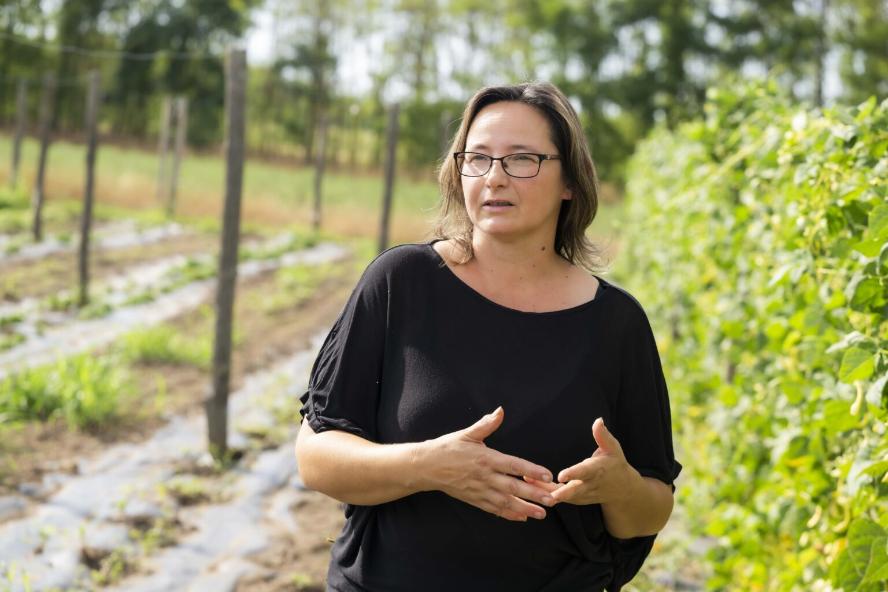
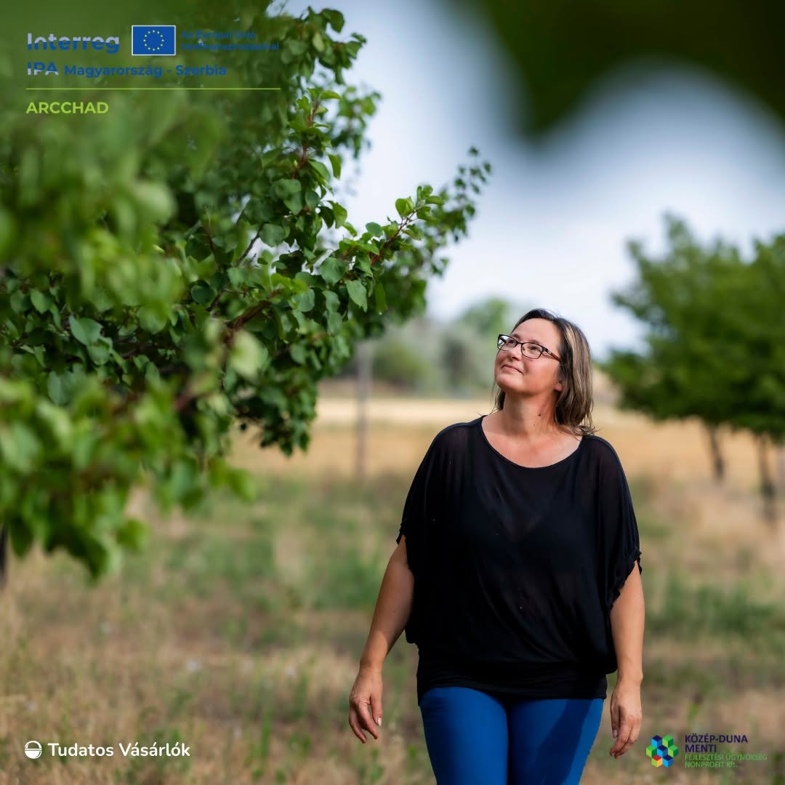
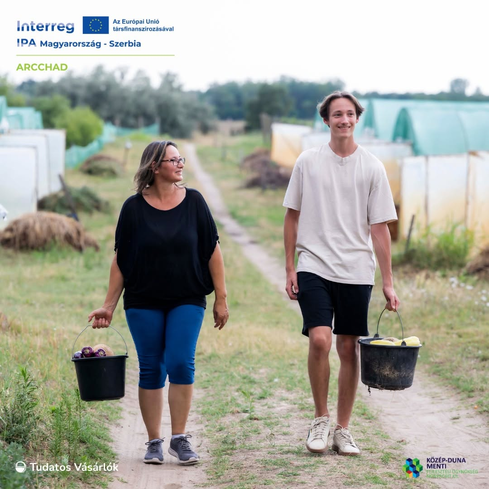

Birs Közösség
Rólunk

Rólunk
Kertünk Kunszálláson található, ahol a természet ritmusához igazodva, teljes mértékben vegyszermentesen és bio szemlélettel termesztjük zöldségeinket és gyümölcseinket. Számunkra fontos, hogy egészséges, tiszta és valódi ízek kerüljenek az asztalokra.
A gazdaságot Héjjas Szilvia vezeti, aki nagyobbik fiával együtt, ketten gondozzák a földet nap mint nap. Munkájukat a természet iránti tisztelet, a gondosság és a közösség iránti elkötelezettség határozza meg.
A Birs Közösség egy közösségi mezőgazdaság, ahol a termelők és a fogyasztók közvetlen kapcsolatban állnak egymással. Tagjaink hetente friss, szezonális terményekből összeállított csomagokat kapnak, amelyeket minden csütörtökön Budapestre szállítunk.
Hiszünk abban, hogy a helyi, fenntartható gazdálkodás nemcsak egészségesebb élelmiszert jelent, hanem egy erősebb, egymásra figyelő közösséget is épít.

„Szilvi Kertészeti szakközépben végzett és kisebb kitérők után 2000-ben kezdett biogazdálkodásba apukájával, majd 2007-től egyedül folytatta. Sokáig a budapesti biopiacon értékesítette a zöldségeit, ott ismerkedett meg Pető Áronnal (Biokert Szigetmonostor), aki akkoriban kezdett közösségi gazdálkodásba. Szilvi tőle hallott először erről a modellről és Áronon keresztül kereste meg őt egy baráti társaság, hogy szeretnék, ha nekik termelne. A Birs Közösség 2013-ban indult, és itthon ritkaság számba megy, hogy azt fogyasztók kezdeményezték és szervezték meg, nem a gazda.” (Tudatos Vásárlók)

